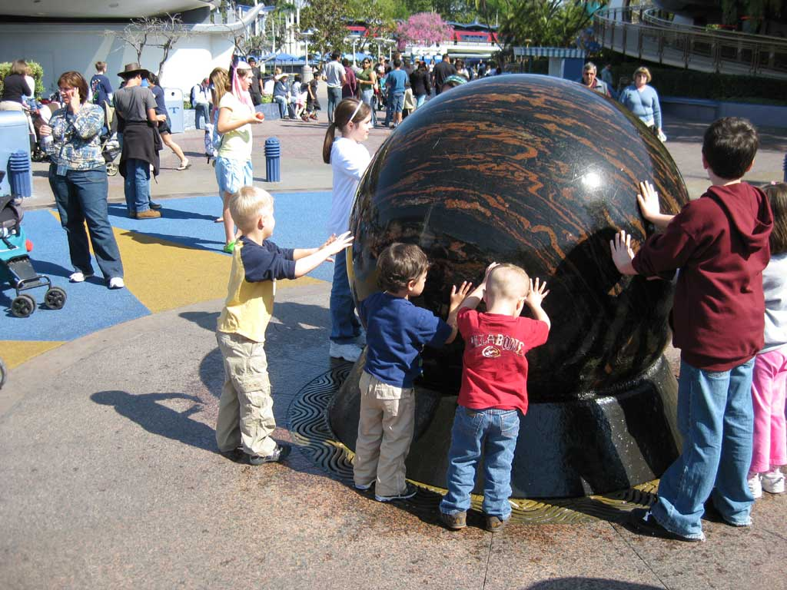
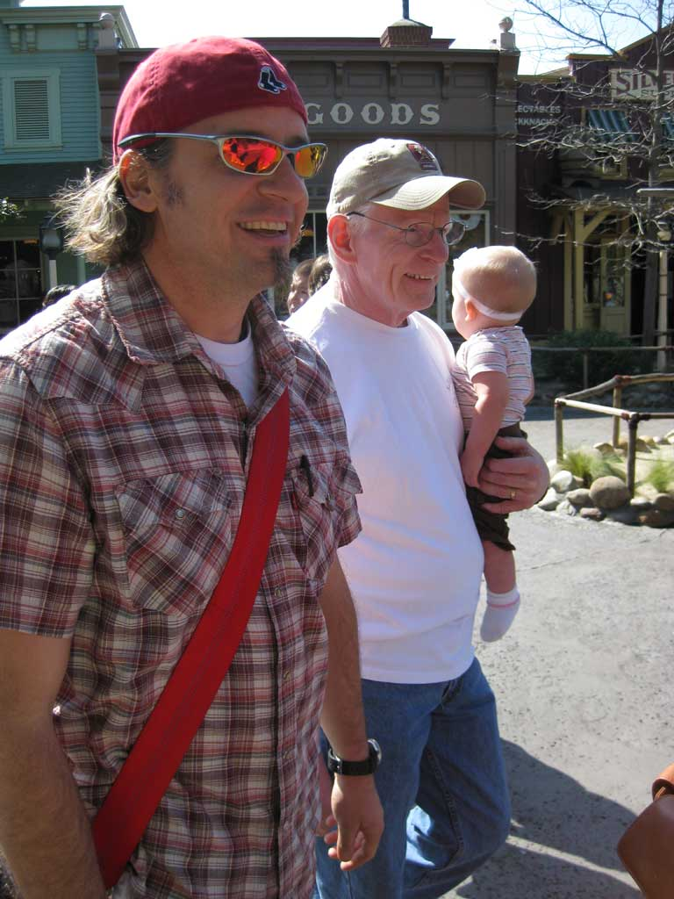
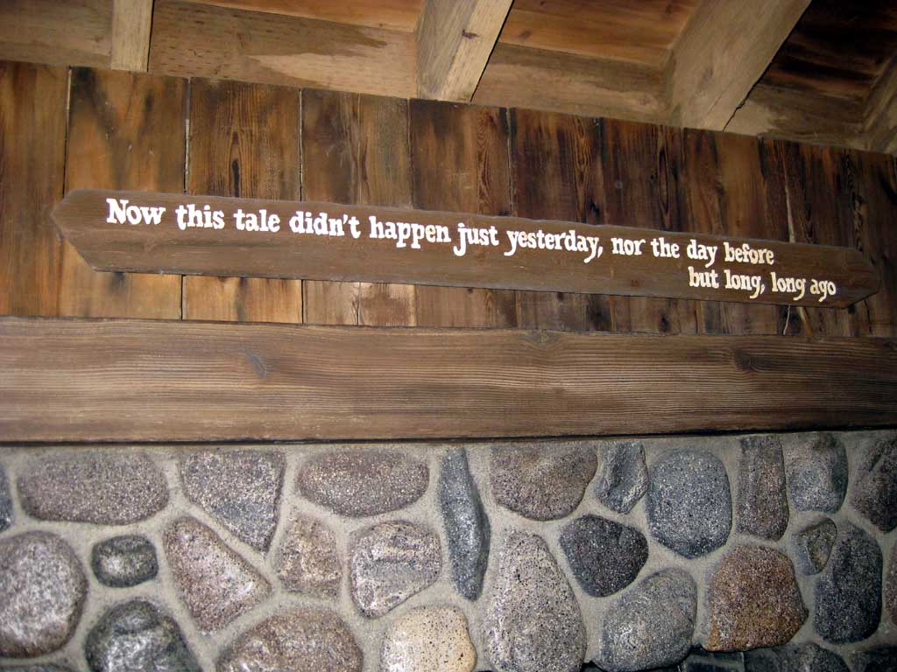
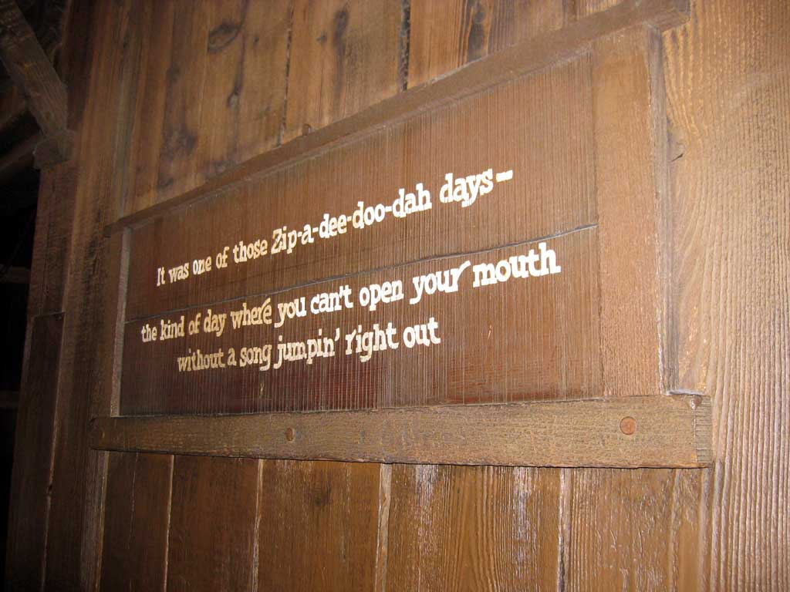
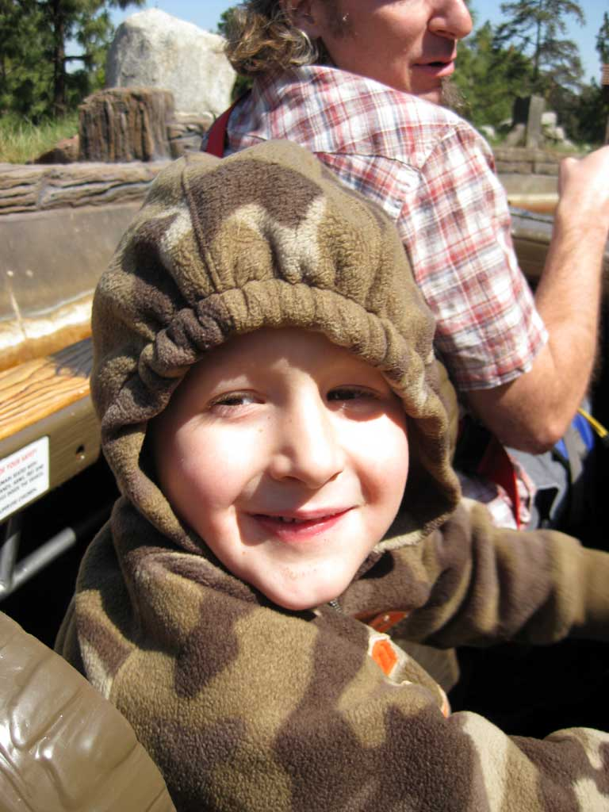
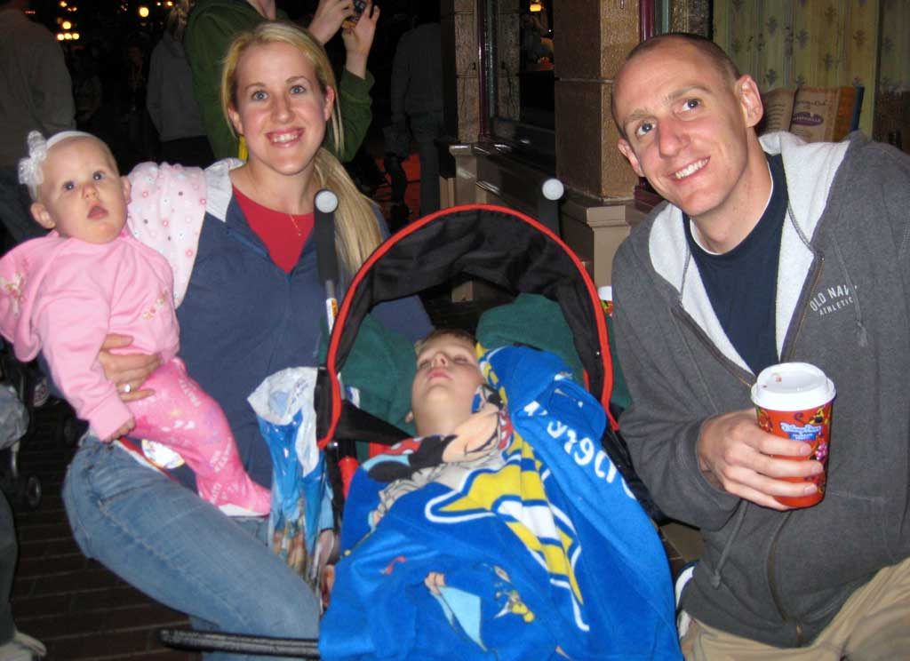

Recovered weblog entry
03/31/2009 - Now this tale didn't happen just yesterday, nor the day before, but long, long ago
I realized today that I hadn't published any of our pictures from our awesome trip to Disneyland on March the 13th. Here are a few of them!





